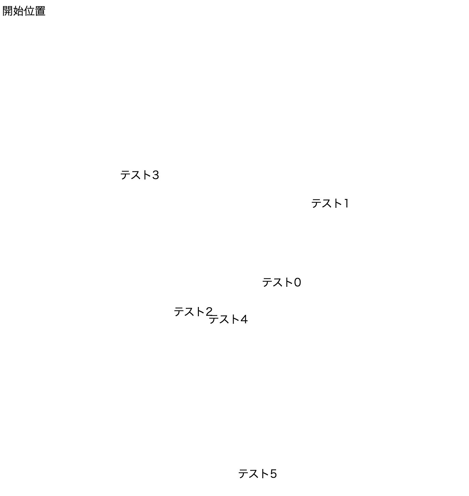

戻る
文字位置ランダム
【内容】
「数字選択ゲーム」「いじわる数字選択ゲーム」はどちらも
数字の表示される位置は固定された仕様になっている(やり方がわからなかったので)。
その経験から表示位置をランダムにできるのかを試してみたプログラムになります。
【構成】
表示位置(座標)をランダムにするためにx座標とy座標をMathクラスのrandomメソッドで生成する
↓
実験１：position relative と absolute を用いてみる(テスト0〜テスト2)
※Javaで生成した数値を変数に入れたいため埋め込み式のcssを採用した
実験２：margin-topとmargin-leftの値をランダムに指定してみる(テスト3〜テスト5)
【工夫や学び】
数字をランダムに生成できれば(今回はJava)文字位置をランダムにできることがわかった。
しかしHTMLやCSSしか知らない場合はできないのだろうか？と新たに疑問が生じた
また実験１の場合、座標によっては文字が被ってしまうのは解決の必要があると感じた。
実験２の場合は前の数字の下に位置するため、
数字が増えるとその分だけ縦幅が増えてスクロールの必要性が増してしまうのがネックと感じた。
(※position relativeやabsoluteではないため、
数字3より下の位置に数字4、数字4の下に数字5が表示されるという意味)
